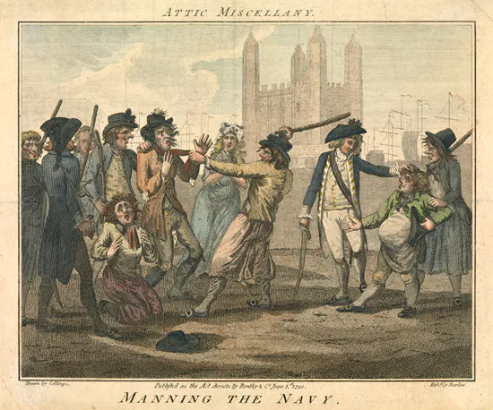
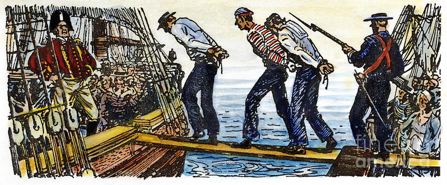
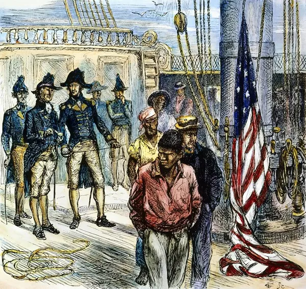
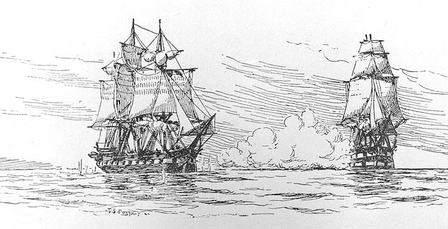

영국 해군은 대영제국의 해상 패권을 유지하기 위해 방대한 수의 선원이 필요했다. 그러나 "자발적으로" 해군에 입대하려는 인원은 부족했기 때문에, 국가가 법적으로 선원을 강제로 징용(impressment) 할 수 있었다.
주로 프레스 갱(press gang)이라 불리는 무리가 술집, 항구, 거리 등에서 복무하기 적합한 대상자를 물색해 강제로 끌고 가는 방식을 사용했다. 즉 납치해갔다.

골때리는것것은 영국인뿐만 아니라 외국인 선원들도 납치 대상이 되었다. 18세기 후반~19세기 초, 특히 인력이 절박하게 필요하던 나폴레옹 전쟁 시기에 영국 해군은 미국 무역선에서도 선원들을 강제로 끌고 가는 일이 잦았다.
프랑스인, 네덜란드인 등 유럽 대륙 출신 선원들도 납치 대상이었으며, 특히 전쟁 중에는 국적을 따지지 않고 “필요하면 징용”하는 경우가 많았다. 이 때문에 외국 선원들은 영국 해군을 두려워했고, 항구에 들어가기를 꺼리기도 했다.

영국 해군은 납치당한 미국 선원들이 사실 "영국 출신이고 미국으로 이주했을 뿐"이라며 "한번 (영국) 신민은 영원히 신민(once a subject, always a subject)"이라는 기발한 논리를 내세웠다. 당연히 실제로는 진짜 미국인도 납치당했다.

대표적인 사건으로 1807년 체사피크-레오파드 사건(Chesapeake–Leopard Affair)이 있는데 무려 탈영병을 잡는다는 명목으로 영국 군함 HMS 레오파드가 수색을 거부하는 미국 군함 USS 체사피크 호을 습격해 미국인 선원들을 납치해간 사건이다.
당연히 미국은 영국이 미국 국적을 무시하고 선원들을 끌고 간 것을 주권 침해로 보았고 이는 1812년 미영전쟁의 원인 중 하나가 되었다.
"NO! STOP! PLEASE LET ME GO!"
(감사합니다! 영광입니다! 국왕폐하를 위해 자랑스러운 대영제국 해군의 일원으로 싸우겠습니다!)
외국인 납치라니
전술적 국적이동